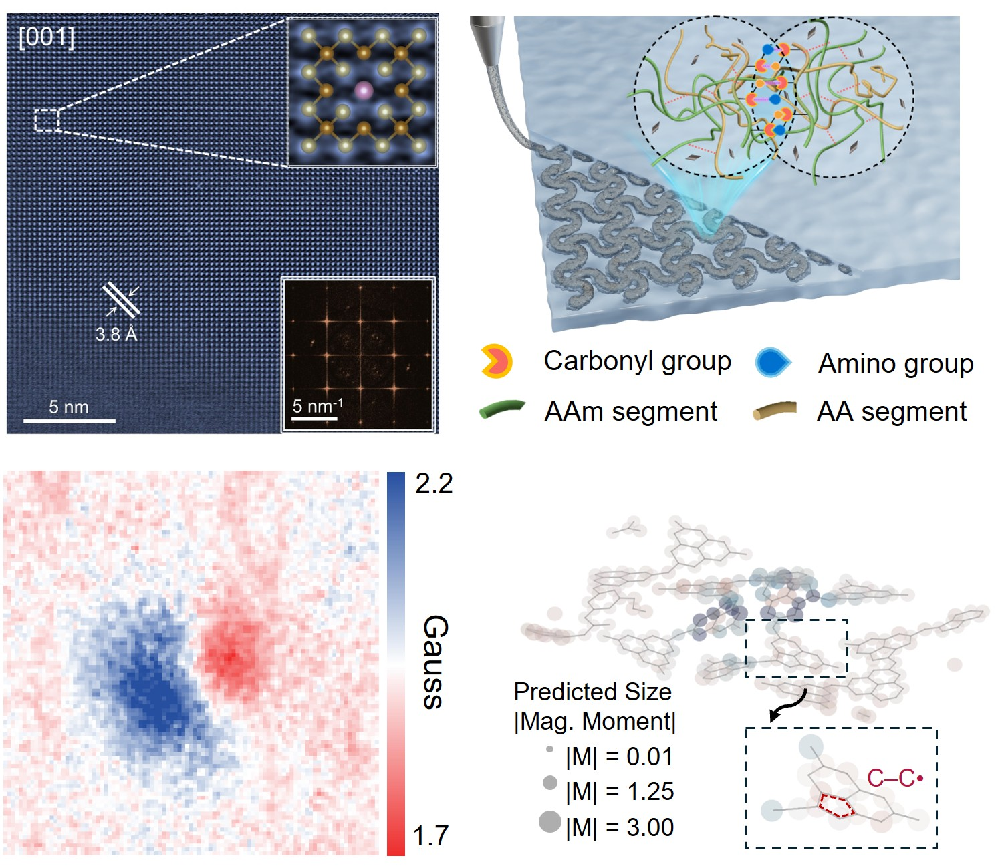
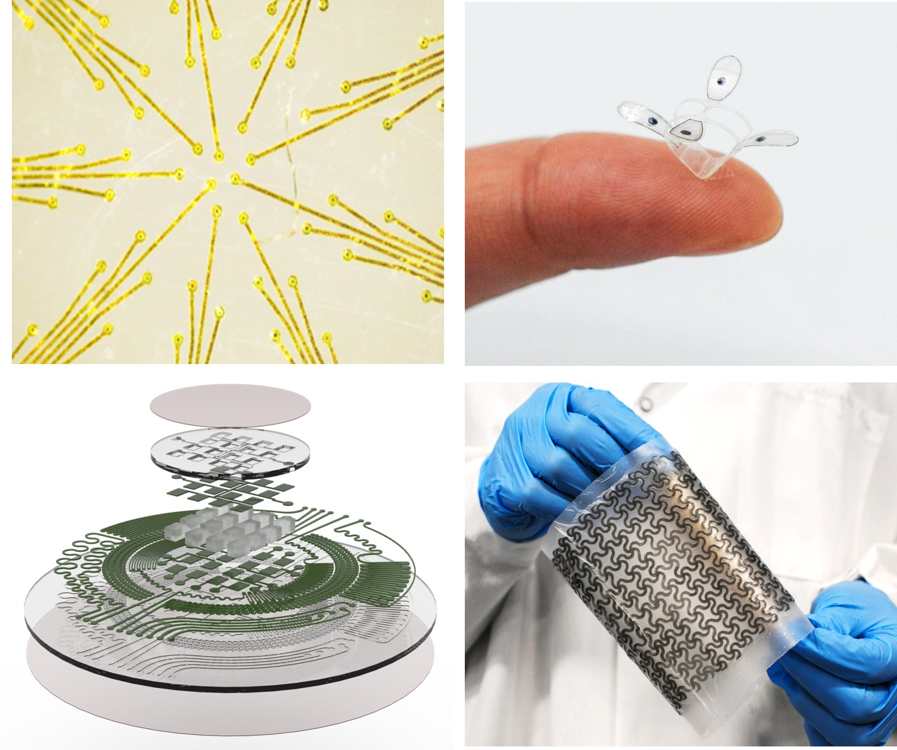
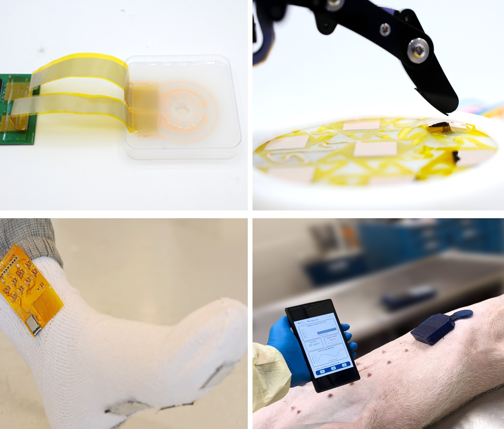

Ferroic & Intelligent Materials
Discovering emerging ferroic materials and novel electrical, magnetic, and coupled physical properties.
Learn more →ADVANCED MATERIALS · BIOELECTRONICS · INTELLIGENT HEALTHCARE
From emerging materials and physical phenomena to flexible electronics and intelligent healthcare.
Explore Our Research


Our Research
Our research spans the discovery of emerging ferroic and intelligent materials, the engineering of flexible and biointegrated electronic devices, and the development of AI-enabled solutions for biomedical applications.

Discovering emerging ferroic materials and novel electrical, magnetic, and coupled physical properties.
Learn more →
Engineering flexible, wearable, and implantable devices from advanced functional materials.
Learn more →
Integrating advanced devices with artificial intelligence to create application-specific solutions for biomedical sensing and healthcare.
Learn more →